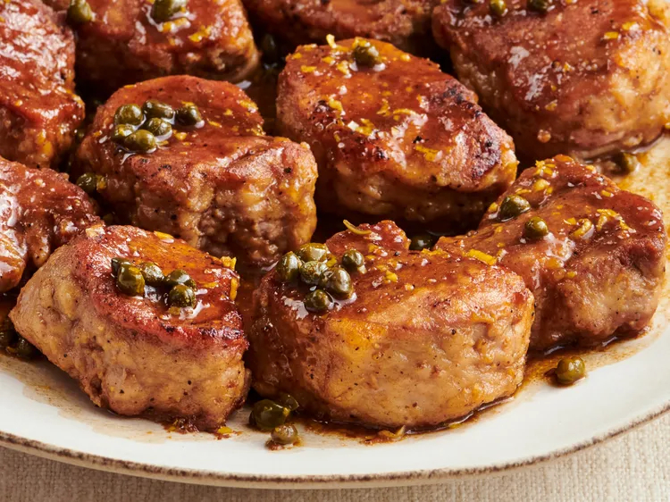

Pork Medallions with Balsamic Vinegar and Capers

This recipe was extracted from AllRecipes website
This is one meal to impress dinner guests that will not break the bank nor will it take very much time!
Served with a green salad, red potatoes, and asparagus, this meal will turn out with a memorable presentation!
Ingredients:
- ¼ cup all-purpose flour
- 1 teaspoon garlic salt, or to taste
- ½ teaspoon freshly ground black pepper, or to taste
- 2 pounds pork tenderloin, cut into 1 1/2 inch pieces
- 2 tablespoons olive oil
- ⅓ cup balsamic vinegar
- ½ cup chicken broth
- 2 teaspoons minced lemon zest, or to taste
- 1 tablespoon capers, or to taste
Directions:
Step I:
- Place the flour, garlic salt, and pepper into a plastic bag.
- Shake to mix, the add the pork tenderloin pieces, and shake again to coat.
- Shake off the excess flour.
Step II:
- Heat the oil in a large skillet over medium-high heat.
- Cook the pork medallions in the hot oil until golden-brown on both sides, 2 to 3 minutes per side.
- Pour in the balsamic vinegar and chicken broth.
- Bring to a boil, then reduce heat to medium, and simmer until the pork is no longer pink in the center, 3 to 4 minutes.
- Remove the pork to a serving platter, then stir the lemon zest and capers into the simmering sauce.
- Continue simmering until the sauce has thickened to your desired consistency.
Home